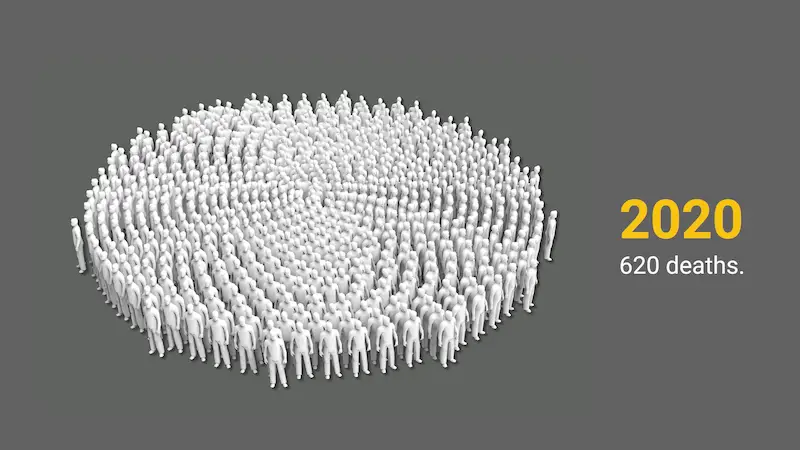

A Tragedy in the Skies
On December 4, 2025, it marked 51 years since the tragic Martinair Flight 138 plane crash in the Saptha Kanya (Seven Virgins) mountain range in Maskeliya. This event is recognized as the deadliest aviation disaster in Sri Lankan history.

Gone Too Soon
Data indicate that deaths from ischemic heart disease in young people have more than doubled over the past decade.